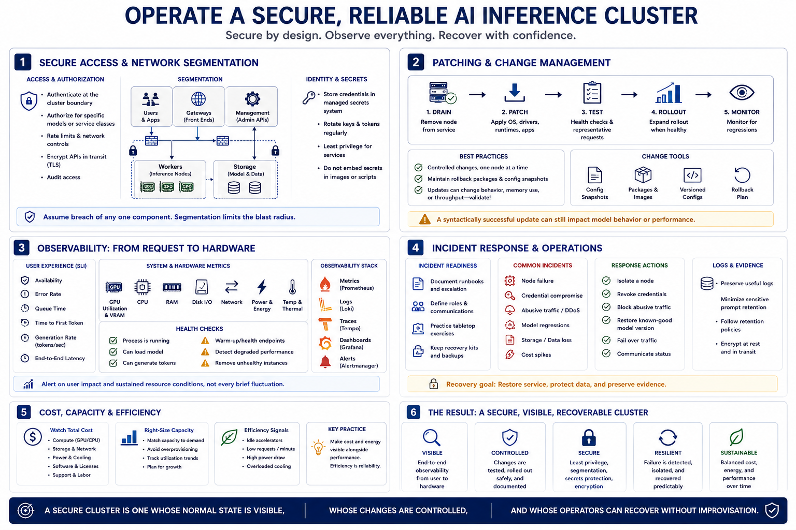

Security, Monitoring, and Operations
Connecting to LMS... Progress: in progress

Narration
Require authenticated access at the cluster boundary and authorize clients for specific models or service classes. Protect APIs with encryption in transit, rate limits, and network controls. Segment user-facing gateways, management interfaces, storage, and worker traffic so compromise of one component does not expose the entire control plane. Store service credentials in a managed secrets system, rotate them, and avoid embedding them in images or scripts.
Patch operating systems, GPU drivers, runtimes, front ends, and orchestration components through a controlled process. Remove one node from service, apply the change, test health and representative requests, and expand the rollout only when results are acceptable. Maintain rollback packages and configuration snapshots because a syntactically successful update can still change model behavior, memory use, or throughput.
Monitor from the request down to the hardware. Track availability, error rates, queue time, time to first token, generation rate, and end-to-end latency. Correlate those signals with GPU utilization, VRAM, CPU, RAM, disk, network, power, temperature, and throttling. Health checks should detect whether a process is merely running and whether it can actually answer a model request. Alert on user impact and sustained resource conditions rather than every brief fluctuation.
Prepare for incidents. Preserve useful logs without retaining sensitive prompts longer than policy allows. Define how to isolate a node, revoke credentials, stop abusive traffic, restore a model version, and communicate service degradation. Review cost and energy consumption alongside performance; idle accelerators and overloaded cooling are operational signals. A secure cluster is one whose normal state is visible, whose changes are controlled, and whose operators can recover from failure without improvising access or data handling.